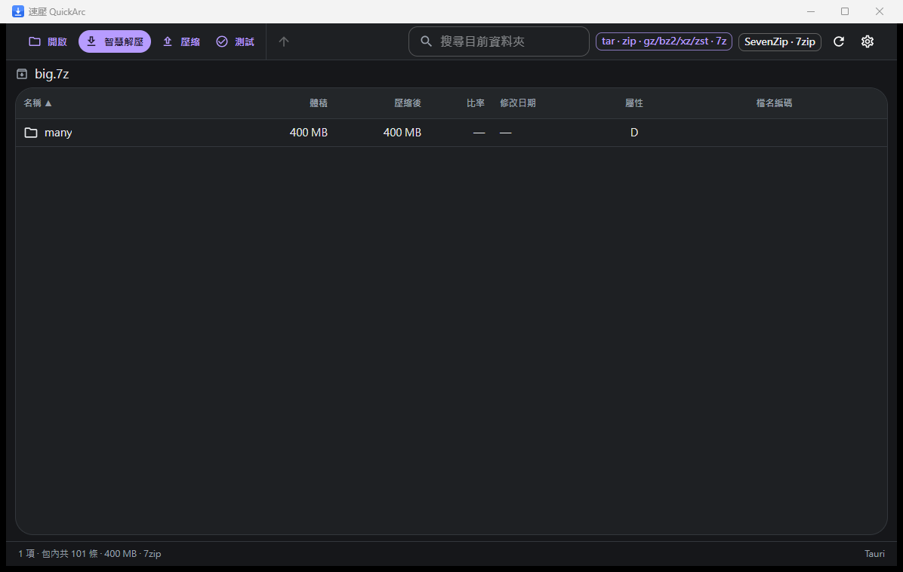

智慧解壓
自動辨識格式與壓縮層，支援多層封裝、選取項目解壓與完整性測試。

WHY QUICKARC
從格式判斷到進度回饋，QuickArc 專注把每一步做得直接、可預期。
自動辨識格式與壓縮層，支援多層封裝、選取項目解壓與完整性測試。
比例、體積與目前項目即時顯示，長時間工作不再是一片空白。
處理 GB18030、Big5 等舊編碼造成的亂碼名稱，並標示原始編碼。
同一份 Rust 核心，為 Windows、macOS 與 Linux 建置原生桌面程式。
解壓前阻擋逃出目標資料夾的路徑；同名檔案可選擇跳過、覆蓋或自動改名。
DOWNLOAD
下載連結會自動指向 GitHub 上最新的 QuickArc 正式版本。
可攜版免安裝；需要捷徑與解除安裝程式時可選 NSIS 安裝版。
單一 DMG 同時原生支援 Intel Mac 與 Apple Silicon。
偏好免安裝可選 AppImage；需要系統選單與套件管理可選 DEB。
* 視本機 7-Zip 引擎能力而定。
PRIVACY & SAFETY
無帳號、無後台服務。 QuickArc 不會把壓縮包或檔名送到伺服器。
未簽章提醒。 目前發行檔尚未購買 Windows 程式碼簽章或 Apple notarization，系統可能顯示安全提示。
可自行驗證。 每個 Release 都提供 SHA-256 校驗值，並可從 GitHub 查看原始碼與建置流程。
FAQ
不需要。可直接從 GitHub Releases 下載，沒有帳號或付費牆。
在 Finder 對 QuickArc App 按右鍵，選擇「打開」，再確認一次即可。這是因為目前版本尚未做 Apple notarization。
想免安裝、單檔執行就選 AppImage；使用 Debian、Ubuntu 或衍生發行版並希望整合系統套件管理時選 DEB。
目前執行檔未做程式碼簽章，因此可能出現警告。請先比對 Release 頁面上的 SHA-256 值，再決定是否執行。
視本機 7-Zip 能力而定。QuickArc 會自動偵測可用的外部引擎，並在設定頁顯示各格式的讀寫能力。